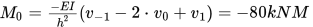

Edupanda » Metody numeryczne » Metoda różnić skończonych (MRS)
Metoda różnic skończonych (MRS)
Metoda polegająca na przybliżeniu pochodnej funkcji przez odpowiednie wzory różnicowe. W poniższych opracowaniu skupimy się na dwóch prostych zastosowaniach metody różnic skończonych:
- Rozwiązywanie równań różniczkowych
- Rozwiązywanie belek zginanych
Poszczególne pochodne zamieniamy na wzory różnicowe korzystając z poniższych wzorów
Centralne wzory różnicowe dla zagadnienia jednowymiarowego
gdzie ℎ - długość elementu.
Rozwiązywanie równań różniczkowych przy pomocy metody różnic skończonych
Ogólny tok postępowania w tym przypadku
- Podział badanego przedziału na n elementów o długości h
- Zastąpienie pochodnych w równaniu odpowiednimi wzorami różnicowymi
- Rozpisanie równań różnicowych dla poszczególnych punktów
- Uwzględnienie warunków brzegowych
- Rozwiązanie układu równań w postaci macierzowej
Przykład 1
Treść
Rozwiązać problem brzegowy z danymi jak poniżej
Dzieląc przedział na N=4 elementy
Rozwiązanie
Długość pojedynczego elementu:
Położenie poszczególnych węzłów
Zamieniamy równanie korzystając ze wzorów różnicowych:
Dla każdego węzła zapisujemy równanie różnicowe zgodnie z powyższym wzorem, pomocniczo zapisujemy wartośći x dla poszczególnych węzłów:
Uwzględniamy warunki brzegowe, również zamieniając je na wzory różnicowe
Zapisujemy powyższe równania w postaci macierzowej
I ostatecznie rozwiązanie (w tym przypadku uzyskane w programie Mathcad):

W praktyce interesuje nas jedynie pierwsze 5 wyników, ponieważ ostatni znajduje się de facto poza przedziałem badanym
Rozwiązanie analitycznego tego równania uzyskane klasycznymi metodami rozwiązywania równań różniczkowych:
W tabeli zestawiono wartości wraz z błędami dla poszczególnych punktów
Ddybyśmy podzielili przedział na więcej elementów dokładność była by oczywiście większa, natomiast w takim przypadku konieczne byłoby użycie programów obliczeniowych typu Matlab
Rozwiązywanie belek zginanych przy pomocy metody różnic skończonych
Tok postępowania jest niemal identyczny jak w przypadku rozwiązywania równań różniczkowych, ponieważ wychodzimy od zależności pomiędzy przemieszczeniem i obciążeniem belki prostej:
Który w zapisie różnicowym przyjmie postać:
Lub w prostszym zapisie:
Problemy zaczynają się w momencie kiedy belka nie jest obciążona w sposób ciągły, ale np. poprzez przyłożenie do niej siły punktowej, obciążenia trapezowego itd., lub kiedy jej sztywność jest zmienna na długości belki. W takich przypadkach będziemy musieli sprowadzić obciążenie do obciążenia ciągłego.Dodatkowo po obliczeniu wartości ugięcia belki w poszczególnych punktach skorzystamy ze znanych zależności które pozwolą nam obliczyć siłę tnącą oraz moment zginający:
Warunki brzegowe dla belek
Warunki brzegowe będą dla belki wynikały ze sposobu podparcia jak przedstawiono poniżej
Przykład 2
Treść
Rozwiązać podaną belkę korzystając z MRS,
Rozwiązanie
Zapisujemy równanie różnicowe dla punktów i=1,2,3,4
Następnie zapisujemy warunki brzegowe, w x=0, i=0 utwierdzenie pełne, w x=4, i=4 swobodny koniec
Podobnie jak w poprzednim przykładzie zapisujemy całość w postaci macierzowej i rozwiązujemy przy pomocy programu obliczeniowego
Mając wartości ugięcia możemy obliczyć np. wartość momentu gnącego w utwierdzeniu
Akurat ta belka jest bardzo typowa, możemy więc z łatwością znaleźć analityczne rozwiązanie i porównać je z naszym, numerycznym
Jak widać rozwiązanie dla momentu zginającego jest identyczne, nieco bardziej interesująco ma się sprawa z ugięciem końca belki:
Jak widać w tym przypadku błąd względny wynosi ponad 6%, podobnie jak poprzednio wyższe n sprawiłoby że ten błąd byłby mniejszy.
Bonus
W powyższym przykładzie pominęliśmy wartość siły tnącej w utwierdzeniu. Jak łatwo zauważyć stwarza ona pewien kłopot, ponieważ wzór:
Zawiera wartość przemieszczenia V−2 której nie obliczyliśmy. Jeżeli jednak w zadaniu mielibyśmy za zadanie obliczyć wartość siły tnącej musielibyśmy dodatkow zapisać wzór różnicowy dla i=0, co zilustrowano poniżej
Oczywiście pozostałe wartości przemieszczenia nie zmieniły się, ale mając obliczone V−2 możemy zweryfikować wartość siły tnącej w utwierdzeniu:
Jak widać wynik jest idelanie zgodny z wartością analityczną